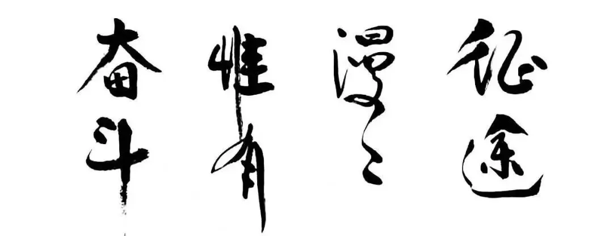

2021年碧桂园集团工作会议杨国强给莫斌题了8个字
2021年碧桂园集团工作会议，杨国强给莫斌题了8个字
1月8-9日，碧桂园集团召开了2021年集团工作会议，2021年不设销售额目标，但设定了其他的目标。
NO. 1｜壹
碧桂园集团董事会主席杨国强此前曾给集团高管们题过几幅字，或激励、或赋予期望。
碧桂园集团总裁莫斌，是目前得到题字次数最多的高管。2021年，杨国强又给莫斌题了八个字，颇有深意：征途漫漫，唯有奋斗。

既希望总裁能帮助碧桂园走得更远，规模更大；又希望其能解决碧桂园目前存在的诸多问题，走得更好、更稳、更有质量。
杨国强的此次发言时间共105分钟，中途被提醒已超出原定时间，意犹未尽的杨国强，还想继续说，于是上个洗手间，回来继续。
口音很重的塑料普通话，咱听得很辛苦，整理出了4点杨国强发言部分的主要内容：
1、已经76岁的杨国强，畅谈来到这世上，怎样过一生。没读过大学、一无所有的他，1978年还是个建筑工，之后一步步走到今天。
天机认为，个人努力和时代机遇，一个是个人主观能动性，一个是大环境，杨的发言中经常可以看到这两点的痕迹，但背景没提：海水深深，一片汪洋。
2、每个区域对每个县要以100年做下去的心态，做好所有的事。并提了区域总裁该有的三项重要能力：领导管理能力、与人打交道的能力、经济分析能力。
3、以碧桂园存在的细节案例，指出碧桂园众多需要改进的问题，此次是车库顶绿化：所有道路与车库结构的浇筑一次成型，堆土使得雨水直流到排水孔。
莫斌和程博士等高管都是高薪养着的人，没花心思在设计细节上，浪费不该浪费的钱，使得杨国强发飙。
4、提了一个疑问：品牌、产品、资金支持都没问题，为什么区域总就是做不好？
最后这个，天机可以回答：一是用人问题，二是碧桂园高周转机制的考核问题，三是宦僚体系问题。
杨主席是个聪明人，这话是说给各位高管听的：各自来背锅，反正没我老杨啥事。
NO. 2｜贰
碧桂园总裁莫斌汇报，先对杨国强提出的设计细节有问题浪费钱现象进行认错。
再讲了7点主要内容，天机写主要的4点，并提了一些个人看法：
1、碧桂园要成为百年企业，2021年全竞提升，坚持不懈。
天机认为，这个全竞在碧桂园高周转机制下，恐怕会跑歪，更多应该考核质量、群诉事件等问题，不把业绩考核列入其中。
2、区域倒数的排名情况和区域总裁OLA评估。区域倒数排名中，海南区域倒数第9，广西区域倒数第6。谢金雄的区域作为目标完成好的区域代表，被莫斌表扬多次。
100个区域总裁目前提交的3年规划，很多不合格。月底将统一培训，然后结合自己区域的实际情况编制，重新规划。 各区域的业绩一定不可以、不允许注水 。
天机认为，其实目前碧桂园的考核机制下，都不注水是不现实的。谁想业绩倒数，被集团点名批评呢？搞工抵房、或找一些包销公司先包销，把业绩报高再说，来年再退出来卖（或允许更名）。
真要区域不注水，其实也简单，每个区域限定房源更名的数量、退房的数量，超过限定数量，每套罚款30万。通道卡住，自然弄虚作假的少了。
3、审计监察是企业的安全阀门，碧桂园将在2021年 加大力度进行反腐工作 ，各板块将加强与审计监察联动。
这点，碧桂园的审计监察部门负责人王华在汇报中指出：2020年碧桂园处理经理级别以上占总人数的比重达74%，其中重大案件占总案件的比例达37%， 财务、成本、营销占比高达88%
天机觉得，碧桂园在反腐的上要走的路还很长，需警惕宦僚体系下的利益共同体相互袒护、警惕集团高管和功勋元老关联方的拉帮结派，这类人的破坏力最强。
集团和区域还需加强互动，特别是审计监察部门的权力和级别应该加强，最好直接向杨国强和杨惠妍汇报。
4、要有现金流的利润，有利润的现金流。既要数量又要质量。
结合杨国强制定的经营理念，投资标准年化25%，提升投资转化率和资产周转率。两点结合，互为表里，打组合拳。管理无定式，怎么合适怎么来。
NO. 3｜叁
碧桂园首席财务官（CFO）伍碧君也做了发言，LV围巾加身、水光针痕迹异常明显：
将重新编制双享机制，若区域总不认同集团的分配方案，那是区域总无能。哈哈哈， 集团的财务就是比其他部门牛，说话也够硬气。
此外，碧桂园集团副总裁兼人力资源管理中心总经理、运营中心总经理的黎晓林也做了发言，这位刚 从湖南区域晋升到 集团不久。
天机个人感觉黎在诸位高管中发言是最差劲，远不如前任彭志斌。莫斌最放得开，程博士文质彬彬。
黎晓林设定的目标是： 1年内无重大群诉，3年内客户认同，5年产品质量行业口碑第一 。
说实话，天机是不相信这个能实现的，反正咱每年都会来打脸。 还是要实事求是的好，不然 客户重大群诉这类信息，区域强制压下 ；
客户认同、 行业口碑第一， 靠给 现在无节操 （有真钞 ）的媒体塞钱，大 唱赞歌 ，很容易造假。
碧桂园集团 承认自己质量差 ，提升办在发言中说 ，假设行业的平均水平是10分，碧桂园 只有4分， 远低于行业平均水 平，需 重点提升。
以后天机就拿这个做意大利炮，等水军来洗地板，官方自证的炮弹轰死水军。
另外，提升办提到，2020年碧桂园的全竞，提升节省各项总额636亿元。
而过长的流程时间，690个子系统将在今年重点治理。未来将精益管理，业务全面数字化。
NO. 4｜肆
此外，碧桂园集团旗下多个产业也做了汇报：
一、博智林机器人研发团队4000人，平均年龄30.2岁，目前主要是基础技术和核心零部件。
农业板块，主要有两点：21年基因编辑大豆启动、无人化农场。
二、机器人餐饮主要有3点内容：1、成为全球最大的餐饮集团，全球最大的餐饮设备制造商；
2、今年在大湾区新开10000家门店；3、加盟带回购的加盟方案。
咱个人不想吃机器人做的饭菜，冷冰冰的金属感，没温度，总会有一种吃流水线冷金属的错觉。咱是活生生的人，需要手工做出来的有温度有感觉的饭菜。
三、碧桂园集团的大健康板块和物业板块也做了汇报工作，没什么亮点，物业提到今年是专业服务年，将学习南航铂金客户优先服务的做法。
天机认为，这大概率又将是一种新的创收方式。个人 关注的 重点，在 碧桂园旗下的 现代筑美家居：成本下降了8-13%，要做到行业第一，独立上市。
综合来看，碧桂园这是围绕房地产主业，打通各项资源，分别单独上市，构筑资本护城河，做成碧桂园帝国。
四、子公司们汇报完后，碧桂园还做了个企业高管的主题：刑事法律风险防范。 提到 高频高危的三个 主要 切入点 分别为 融资 、施工 、销售 。
最后，两家咨询公司提到，2020年，房企综合满意度中，提升最强劲的是保利9，其次是华润8.9；厦门建发的满意度高达93，碧桂园反而下降，在质量、交付、维修这几项中处于行业短板。
也是，再不改进，未来在95后、00后这些年轻群体中，口碑崩坏，碧桂园将面临更大的挑战。
工作会议结束后，天机想了想，这场会议中，被遗忘的群体，莫过于基层普通员工了。
碧桂园扶贫做得不错，对谁都好，唯独对基层员工不咋滴（基层员工螺丝钉一般，想裁就裁，没有价值感，中高层和基层收入差距太大）。
文末左下角的 “ 阅读原文 ”，可勾搭天机，防失联。 文末帮忙点个 在看 ”，欢迎留言区一起侃大山。
按日期浏览全部来源（同日按条目标识排序）